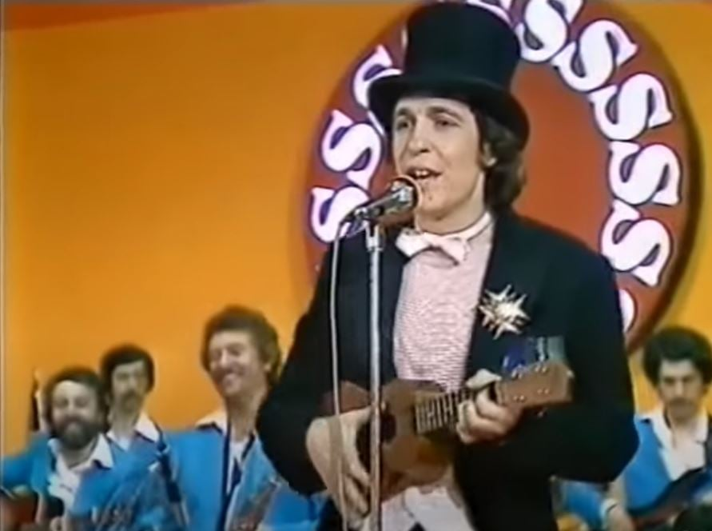

Rino Gaetano è nato a Crotone il 29 Ottobre 1950, ma ha vissuto fin dall’età di 10 anni a Roma. I suoi genitori, entrambi lavoratori, affidarono i primi anni della formazione del bambino a un convento ecclesiastico in provincia di Terni, dove tra le altre cose il giovane Gaetano fu escluso dal coro scolastico perché considerato stonato.
Un episodio, quello dell’esclusione dal coro, che probabilmente lo segnerà tanto profondamente da fargli manifestare più volte, nel corso della sua carriera, l’incertezza di poter essere lui a cantare le proprie canzoni.
Nel 1971 con un gruppo di amici fonda i Krounks, per cui si occupa di suonare il basso e di scrivere i testi delle canzoni.
Parallelamente Gaetano comincia ad appassionarsi al teatro e alla musica frequentando il Folkstudio , lo storico locale considerato un’autorità e un punto di ritrovo per i cantautori appassionati del genere.
Mentre le canzoni di denuncia sociale e di militanza imperversavano e i valori delle lotte studentesche e della militanza si mischiano a quelli della musica, Gaetano canta storie buffe e all’apparenza spensierate, ma che in realtà celano un messaggio più profondo e sensibile.
«[Gaetano] sentiva l'importanza dello studio, però aveva anche dei momenti di grande assenza, che non era vuoto. Era molto difficile trovare Rino in situazioni di "vuoto", era sempre mentalmente occupato. C'erano dei gusti, questo mi è sempre sembrato di lui, dei gusti all'interno di questa persona, delle ricerche sue personali che lo tenevano occupato. Lui è stato abbastanza un ragazzo sognante, molto sognante.»
Nel 1973 Rino Gaetano, che ha ottenuto il diploma come ragioniere, decide di prendere un anno sabbatico per dedicarsi completamente alla carriera musicale. Promette ai suoi che se non ci riuscirà metterà la testa a posto e si dedicherà a un più tranquillo lavoro d’impiegato in banca, come avrebbe desiderato suo padre.
Il suo primo 45 giri, uscito nel 1973, è I love you Maryanna/Jacqueline, per cui si firma col nome di Kammamuri’s. Forse, a detta di alcuni dei suoi collaboratori, l’artista usa uno pseudonimo per l’insicurezza dovuta alla sua voce graffiante. Gaetano infatti non si considererà mai un vero cantante, bensì un autore di canzoni.
Il disco aprirà le porte ai successivi Ingresso Libero del 1974 (per cui è stato realizzato un doppio CD a quarant’anni dall’uscita) e Ma il cielo è sempre più blu del 1975.
In realtà i tre primi dischi non gli procureranno nessuna popolarità: il linguaggio nonsense, l’ironia, e le atipiche chiavi di lettura non verranno capite dalla maggior parte degli ascoltatori.
Gran parte del pubblico contemporaneo a Rino Gaetano si limiterà a fischiettare i motivetti dei suoi brani, senza capire i messaggi di denuncia celati dietro i suoi testi ironici apparentemente senza significato. La notorietà di alcune canzoni gli consentirà comunque di diventare l’artista apripista in alcuni concerti di musicisti già affermati, come ad esempio Antonello Venditti, conosciuto all’interno del Folkstudio.
Nello stesso periodo Gaetano conosce Bruno Franceschelli, un’amicizia davvero importante e che saprà valorizzarne il talento artistico. Con Franceschelli il cantautore porterà in scena la commedia Ad esempio a me piace… Le cui tematiche principali sono le stesse che, a modo loro, affrontavano anche i musicisti più impegnati: l’esclusione, l’emarginazione e l’incomunicabilità.
Nel 1976 la tematica a lui cara dell’esclusione la affronta nel disco Mio Fratello è figlio unico, seguito l’anno successivo da Aida, un disco in cui si rivolge in chiave del tutto originale a tutte le donne e all’Italia, anch’essa vista come una personificazione femminile.

Durante le partecipazioni televisive per presentare i brani dei due album, Gaetano inizia a indossare cappelli e costumi pittoreschi, che resteranno il suo marchio di fabbrica. Nel 1978 viene invitato a prendere parte al Festival di Sanremo: la sua apparizione con tuba, frac e ukulele resterà negli annali della storia della musica italiana.
Mentre per molti la partecipazione di Gaetano al Festival rappresentò un vero tradimento rispetto all’autore che era stato fino a quel momento, per Rino Gaetano fu un modo per capovolgere dall’interno quella che fino a quel momento era stata una delle più importanti passerelle del mondo musicale.
Lo stesso anno uscì l’album E Cantava le canzoni di cui il singolo Nuntereggae più, brano che Rino Gaetano avrebbe voluto presentare al Festival di Sanremo ma che venne rifiutato dagli organizzatori, suscitando scandalo per il lungo elenco di nomi di tutti i personaggi della politica di allora.
Per Gaetano la canzone rappresentava invece un modo per fare ironia e canzonare anche le più grandi personalità politiche, ma restò incompreso da molti ancora per tanto tempo.
Il penultimo disco pubblicato da Rino Gaetano è Resta vile maschio, dove vai? Per il quale si recò con la sua band sull’isola di Stromboli in cerca d’ispirazione. Il disco contiene l’unico brano del cantante a non essere scritto da lui bensì da Mogol, e il cui titolo è omonimo a quello del disco.
Due anni dopo uscirà E io ci sto, un disco meno scanzonato e più maturo, le cui tematiche serie non assicurarono gli stessi successi di vendita dei dischi precedenti, ma che comunque fu a giudizio del cantante un lavoro ben riuscito. Nel 1981 Gaetano collaborò con Cocciante alla realizzazione di QConcert, un mini album di live in cui propose per la prima volta A mano a mano, uno dei suoi indimenticabili successi.
Il 2 giugno 1981, a 31 anni, il cantante morirà in un misterioso incidente d’auto. Con la sua Volvo 343 Rino Gaetano invaderà la corsia opposta alla sua, forse a causa di un mancamento, e lo scontro con un camion sarà per lui fatale.
I funerali del cantante si terranno nella stessa chiesa in cui avrebbe dovuto sposarsi con la fidanzata Amelia Conte un mese dopo, e verrà poi sepolto al cimitero del Verano di Roma.
A vent’anni dalla tragica fine di questo artista unico e incompreso del panorama italiano, una nuova generazione di ammiratori andrà a rendergli omaggio proprio al cimitero del Verano, in un raduno del 2 giugno 2001, riportando in auge un artista che fino ad allora era rimasto nell’ombra e le cui parole non erano mai state veramente capite.
 Rino Gaetano è nato a Crotone il 29 Ottobre 1950, ma ha vissuto fin dall’età di 10 anni a Roma. I suoi genitori, entrambi lavoratori, affidarono i primi anni della formazione del bambino a un convento ecclesiastico in provincia di Terni, dove tra le altre cose il giovane Gaetano fu escluso dal coro scolastico perché considerato stonato.
Rino Gaetano è nato a Crotone il 29 Ottobre 1950, ma ha vissuto fin dall’età di 10 anni a Roma. I suoi genitori, entrambi lavoratori, affidarono i primi anni della formazione del bambino a un convento ecclesiastico in provincia di Terni, dove tra le altre cose il giovane Gaetano fu escluso dal coro scolastico perché considerato stonato.